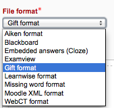
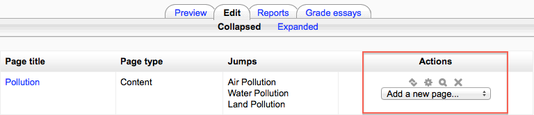

This page is about how to structure a Moodle lesson once you have created it with the Lesson settings. For information on how best to use a Moodle lesson and how students approach it, see Using Lesson.
Adding content and questions to your lesson
- When you have set up your lesson with the Lesson settings,click “Save and display” and you will be taken to the screen in the screenshot below.
- If you click “Save and return to course” instead, then click the “update” icon next to the lesson on the page and click “edit” in Administration > Lesson Administration
Import questions
If you have some questions in the following formats, you can import them to use in your lesson by clicking the Import questions link. For general information about these question types, see Import questions.

Add a cluster
A cluster is a group of question pages which will be offered randomly to a student as they work through the lesson.It is best if you have made the question pages beforehand and can then decide where to mark the start and end of the cluster. The start is marked by a “cluster” page and the end by an “end of cluster” page. See Clusters for more information.
Add a content page
- This is a page where a teacher can provide information to move the lesson forward but without requiring the student to answer specific questions.
- The student sees the page’s title, some information and then one or more buttons at the bottom to select.
- When the student clicks on a button, they go to the next page but their choice is not scored.
Title
- The title of a content page appears to the student at the top of the page.
- A teacher will also see the title in the collapsed edit mode when they are working on the Lesson, and they will also be able to choose the title (and hence this page) from the drop down “jump” lists.
- The title in a content page is also used with the “display left menu” setting.
Page contents
This is where the teacher can add information for the student, making use of the Text editor and its multimedia features.
Content
- Here the teacher writes the words they want the student to click on to get to the next part of the lesson.
- These words will appear to the student as a button.
- The teacher can check the box to have the buttons appear horizontally, or uncheck it for them to appear centered vertically.
Number of options available
How many of these you have depends on your choice in the Maximum Number of Answers setting in Lesson settings
The Jump
- Each Description in a Content page has a Jumps menu. “Jumps” take a student from one page to another.
- A “relative jump” is “next page” or “end of lesson” whereas an “absolute jump” gives the actual name of a page.
- The teacher chooses from the dropdown the correct page to send the student to if they click on the button that will be made from this particular description. Any pages created by the teacher will have their titles appear in this dropdown, allowing them to be selected.
- When a student clicks on a description button, they are sent to the page defined in the Jump associated with the button.
*See Jumps for more detailed information.
Add a question page
- From this link you can choose from a variety of question types which will then be added as pages to your lesson.
Question types
Multichoice - The student is given a question and a list of answers. The answer list will be shuffled every time the question is view by a student. By default they choose one answer but you can check the box “multiple answer” to allow them to choose more than one answer.
Essay - Students can write a longer answer as part of the lesson and this can be graded manually by the teacher. If the main purpose of your lesson is for students to write an essay, consider the Assignment module instead.
Matching - This allows you to set up lists which must be matched against other lists, for instance, words, pictures, numbers etc. The student must match all correctly to receive the score.
Numerical - This requires a number as an answer. A number within a range may also be accepted as correct. The range separator to be used is the colon : For example, to accept as correct any number between 10 and 12 (10, 11 and 12) you would type 10:12 in the Answer box.
Short answer - A student must provide a single word or short phrase answer. The teacher must anticipate the possible answers and enter them in the Jump dropdown boxes, using ** wild cards if appropriate.
True/false - The student is given a sentence and must decide if it is true or false.
Moving your lesson forward
- Once you have added your first content or question page, you reach the next screen which displays your page title/type/jumps (ie where the responses take the student to) and actions you can take next.

- The Actions icons allow you to move (if you have more than one), edit, preview or delete your pages.
- The drop down allows you to create another page of your choice.
Ending your lesson
- To bring the lesson to a close, select the “End of Lesson” option from the Jump menu on any relevant pages.
- The student will then see a generic message as in the next screenshot, with a direction back to the main course page or to view their grades.